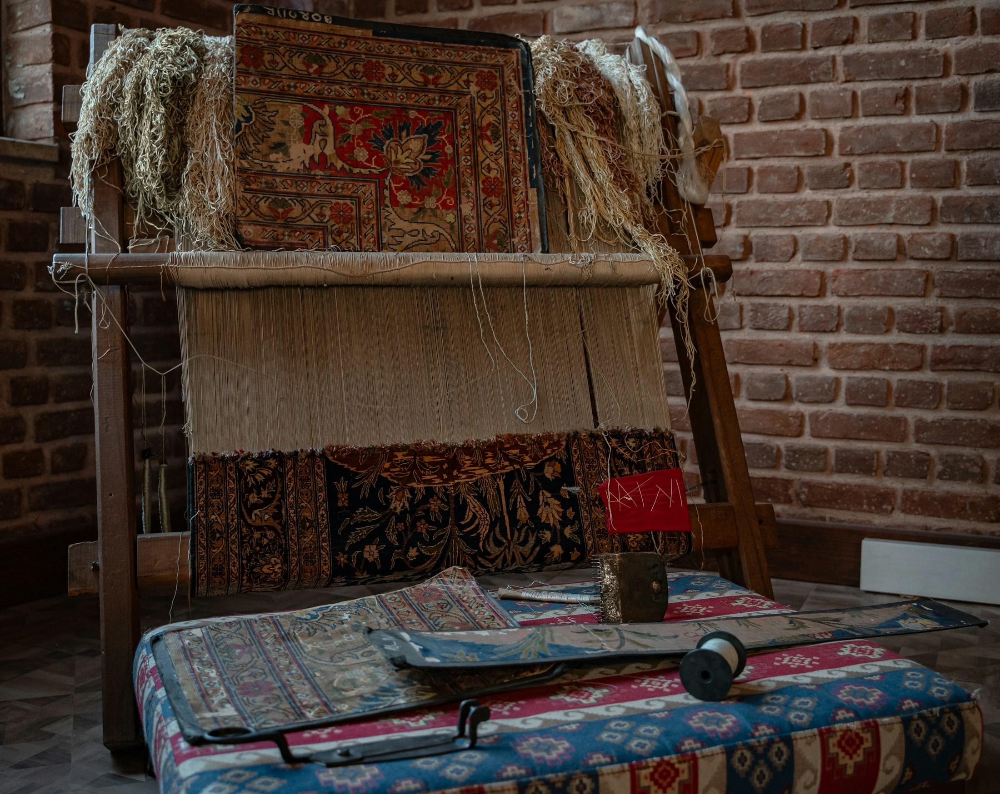
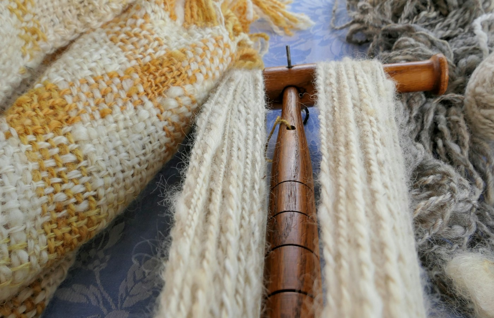
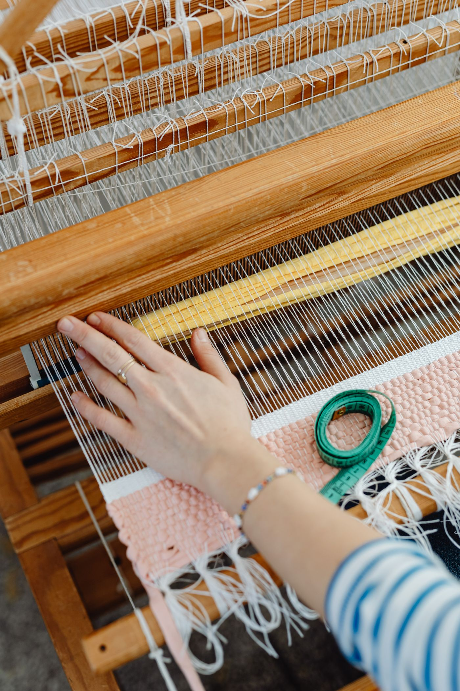
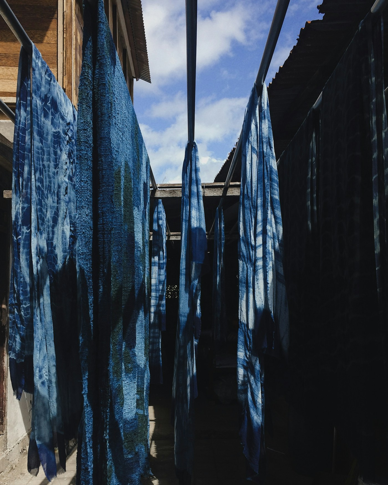

Des savoirs qui prennent vie.
Rendre le patrimoine textile accessible par des expériences concrètes, adaptées à chaque public.
Découvrir nos actions
Interventions & rencontres
Des rencontres adaptées aux scolaires, aux musées et aux événements culturels.
Découvrir cette action
Démonstrations de savoir-faire
Du filage à la teinture : observer les gestes pour comprendre la fabrication d’un textile.
Découvrir cette action
Médiation culturelle
Découvrir l’histoire par les matières, les objets et les questions des participants.
Découvrir cette actionÀ la rencontre des savoir-faire
Filage, tissage sur métier vertical, tissage aux tablettes, teinture naturelle : découvrez nos prestations et construisons une intervention adaptée à votre public.
Les prochains rendez-vous
Découvrez les prochaines prestations de Néotisse : des rendez-vous pour explorer le filage, le tissage et la teinture naturelle.

· Exemple fictif
Découvrir le filage au fuseau
Observer les fibres et découvrir comment le geste transforme la matière en fil.
Voir les détails de cet exemple
Ce contenu illustre la future présentation d’un atelier. Le lieu, les horaires, le public et les modalités seront renseignés pour les événements réels.

· Exemple fictif
S’initier au tissage aux tablettes
Explorer le croisement des fils et les motifs d’un galon tissé aux tablettes.
Voir les détails de cet exemple
Ce contenu illustre la future présentation d’un atelier. Le lieu, les horaires, le public et les modalités seront renseignés pour les événements réels.

· Exemple fictif
Explorer la teinture naturelle
Découvrir les matières colorantes et les étapes de la teinture des fibres.
Voir les détails de cet exemple
Ce contenu illustre la future présentation d’un atelier. Le lieu, les horaires, le public et les modalités seront renseignés pour les événements réels.
Nos partenaires
Le dialogue entre institutions culturelles, recherche et médiation nourrit la découverte des textiles anciens.
Musée de Tautavel
Musée de Gergovie
Musée Henri Prades — Site archéologique Lattara
Université Paul-Valéry Montpellier 3
CERAC
Festival du lin et de la fibre artistique
Lozère Tourisme
Livre d’or
Une rencontre, un atelier, une découverte ? Partagez votre expérience avec Néotisse.
Ces cinq avis sont des exemples fictifs de mise en page. Ils ne proviennent pas de participants réels.
Camille — exemple
Avis fictif de démonstration
Un atelier très accessible. Les démonstrations aident à comprendre les gestes, puis la pratique donne envie de continuer à explorer. Une belle façon de découvrir les savoir-faire textiles anciens.
Alex — exemple
Avis fictif de démonstration
La découverte du filage était passionnante. Les explications sur les fibres et les outils étaient claires, même sans aucune connaissance préalable.
Lou — exemple
Avis fictif de démonstration
Le tissage aux tablettes est une vraie découverte. Voir le motif se former au fil des gestes rend l’expérience particulièrement concrète.
Noa — exemple
Avis fictif de démonstration
Un format qui donne toute sa place aux questions. J’ai apprécié le lien entre l’histoire, les objets et les essais réalisés pendant l’atelier.
Morgan — exemple
Avis fictif de démonstration
Une rencontre chaleureuse autour de la matière et de la transmission. Nous repartons avec un autre regard sur les textiles et les techniques de fabrication.
Laisser un avis
Faisons découvrir le patrimoine textile à votre public.
Parlons de votre lieu, de vos objectifs et du format qui vous correspond.
Nous contacter